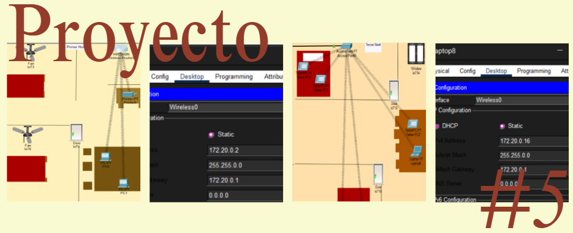
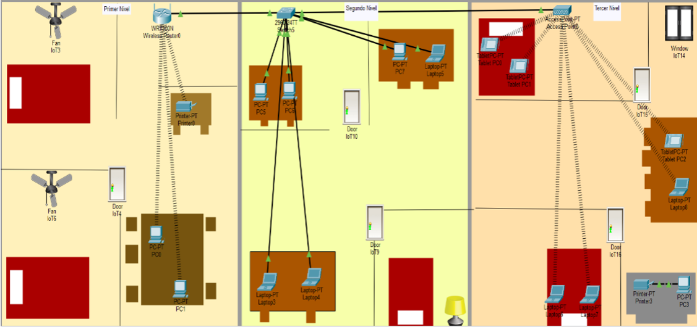

Proyecto Parcial - Red LAN - Packet Tracer
Este proyecto consiste en diseñar y documentar una red LAN en una casa de tres niveles, donde se debe crear un plano y configurar distintos dispositivos en cada nivel utilizando un router, un switch y un repetidor, combinando conexiones cableadas e inalámbricas, asignando direcciones IP y medidas de seguridad, asegurando que todos los equipos puedan comunicarse entre sí, compartir recursos como impresoras y comprobando su funcionamiento tanto por consola como de forma gráfica, para finalmente explicarlo en un informe y un video.
El objetivo es diseñar e implementar una red LAN doméstica en Cisco Packet Tracer dentro de una casa de tres niveles, configurando dispositivos cableados e inalámbricos, direcciones IP, seguridad de red y comunicación entre equipos para simular el funcionamiento de una red real.
En este proyecto trabajé de manera individual utilizando Cisco Packet Tracer para diseñar una red LAN dentro de una casa de tres niveles. Primero elaboré el plano de la vivienda y coloqué los dispositivos de red correspondientes en cada nivel.
En el primer nivel configuré un router inalámbrico con direcciones IP clase B y contraseña de seguridad, conectando dos computadoras y una impresora de forma inalámbrica.
En el segundo nivel conecté un switch en cascada al router principal y agregué tres laptops y tres computadoras para formar la red cableada.
En el tercer nivel instalé un repetidor inalámbrico conectado al switch del segundo nivel y conecté tres tablets y tres laptops mediante Wi-Fi aplicando seguridad con contraseña. Luego realicé pruebas de comunicación entre todos los dispositivos utilizando comandos como ping y el modo simulación de Packet Tracer.
Finalmente documenté todo el procedimiento realizado e hice un video mostrando el funcionamiento completo del proyecto.

